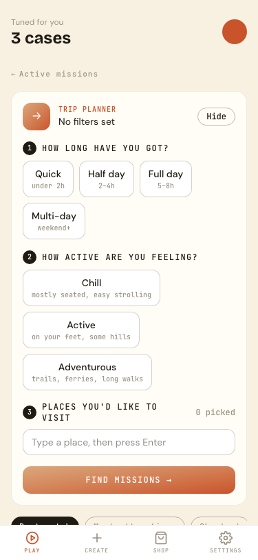
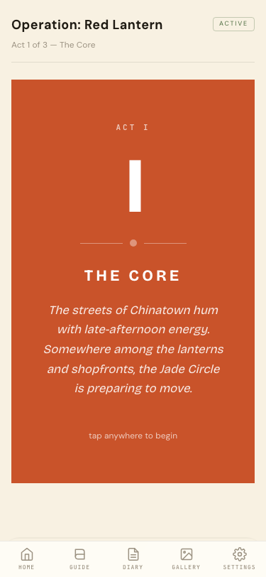
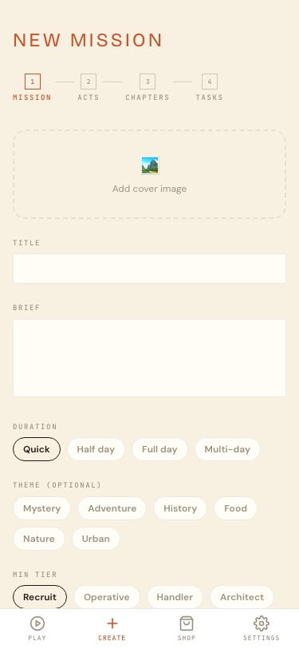
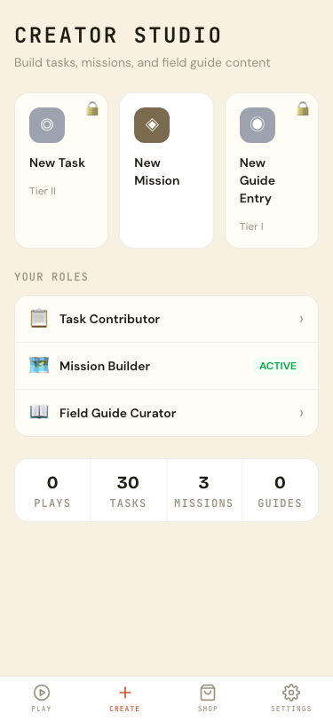
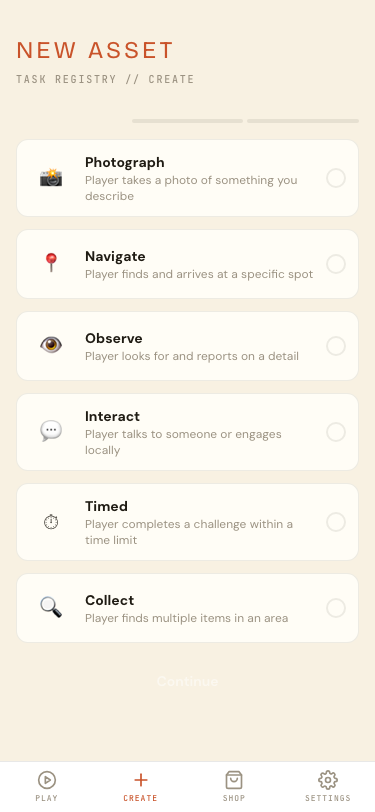
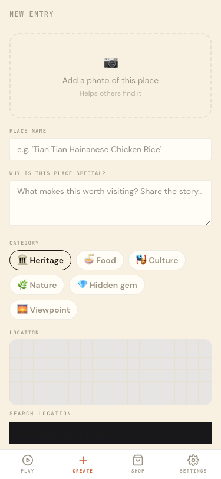
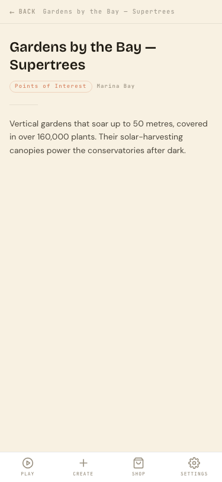

The city, told by its people.
Community-Powered · Location-Based · Narrative Tourism
Post-COVID travellers don’t want another hop-on-hop-off bus. They want to see the city through local eyes — but there’s no scalable platform connecting local knowledge to visitor curiosity.
Walking past heritage, culture, and stories without knowing they’re there. No narrative. No context. No connection to the people who live here.
Guides, heritage experts, and passionate residents have deep knowledge — but no scalable way to share it beyond whoever shows up for a walking tour.
Heritage shops, hawker stalls, and cultural spaces sit metres from tourist foot traffic — invisible because they can’t compete with aggregator marketing.
Mission: Singapore gives local storytellers the tools to create location-based narrative adventures. Tourists play these missions in the real world — navigating to stops, completing tasks, and experiencing a branching story shaped by their choices. Local businesses become natural waypoints in the journey.
Storytellers craft missions. Vendors supply tasks and vouchers. Curators publish heritage content.
Pick a mission, navigate to real locations, complete interactive tasks, shape the branching story.
Players bring foot traffic. Vendors gain customers. Storytellers earn revenue. The cycle strengthens.
Tourists become protagonists in locally-crafted stories. Every mission is a curated route through real places — written by someone who lives here, not generated by an algorithm.
Every mission is authored by a local storyteller who knows the hidden corners, the history, and the best places to eat.
Not a checklist — a branching story. Choices shape the experience. Every outcome leads somewhere meaningful.
A living encyclopedia of heritage sites, food spots, and points of interest — surfaced by proximity as you explore.


Local guides and heritage experts craft narrative missions — weaving real locations, local businesses, and branching stories into immersive adventures that scale beyond a single walking tour group.
Build multi-act missions with narrative branching, outcome flags, and cinematic story beats. Your voice, your story.
Earn 70% of every mission pack sold. Your expertise generates recurring income as players discover your content.
Create once, serve thousands. No group size limits. Your stories run 24/7 in any language you write them.


Local businesses, cultural spaces, and heritage shops become waypoints in the adventure. Players are routed to your doorstep as part of the story — not through ads, but through narrative context that makes your location meaningful.
Your location becomes a task stop in missions. Players arrive with context and curiosity, not just proximity.
Offer vouchers as in-game rewards. Players earn them through gameplay and redeem at your location.
Track visits, voucher redemptions, and player interactions. Real data on real foot traffic from real missions.

Heritage experts and cultural enthusiasts publish a living Field Guide — location-aware entries on heritage sites, food culture, and points of interest that surface to players based on proximity. The city’s stories are never out of reach.
Transform static plaques and forgotten sites into discoverable, living content that visitors actually engage with.
Field Guide entries complement missions. Players deepen their understanding mid-adventure without leaving the experience.
Curated by experts with a clear publication workflow. Quality content, not user-generated noise.


Every mission routes tourists to real businesses. Vendors gain measurable visits and voucher redemptions.
Businesses create location-based tasks and offer vouchers that storytellers weave into their narratives.
Local guides and heritage experts build the missions that attract players and route them to vendor locations.
Transform static heritage assets into interactive, discoverable experiences. Community curators maintain a living Field Guide that grows with the city.
Track which areas visitors explore, how long they stay, and which stories resonate. Real behavioural data, not survey self-reports.
Locals are the supply engine. Content is created by residents, not imported. Revenue flows back to the community through storyteller earnings and vendor uplift.
Full platform with mission authoring, task verification (GPS, photo AI, QR), field guide publishing, and player progression — built and operational.
Pilot-ready for heritage districts, cultural precincts, and event activations. Scalable from a single neighbourhood to city-wide deployment.
Mission: Singapore is built, operational, and ready for pilot partnerships. We’re looking for partners who believe tourism should benefit the communities it touches.
Walk through a real mission in Singapore. See the full player, storyteller, and vendor experience end-to-end.
Deploy in a heritage district or cultural precinct. Onboard local storytellers and measure tourist engagement.
Co-develop content pipelines, integrate with existing tourism infrastructure, and scale across precincts.
{ Build } Hackathon 2026 · ms.eustonlee.com